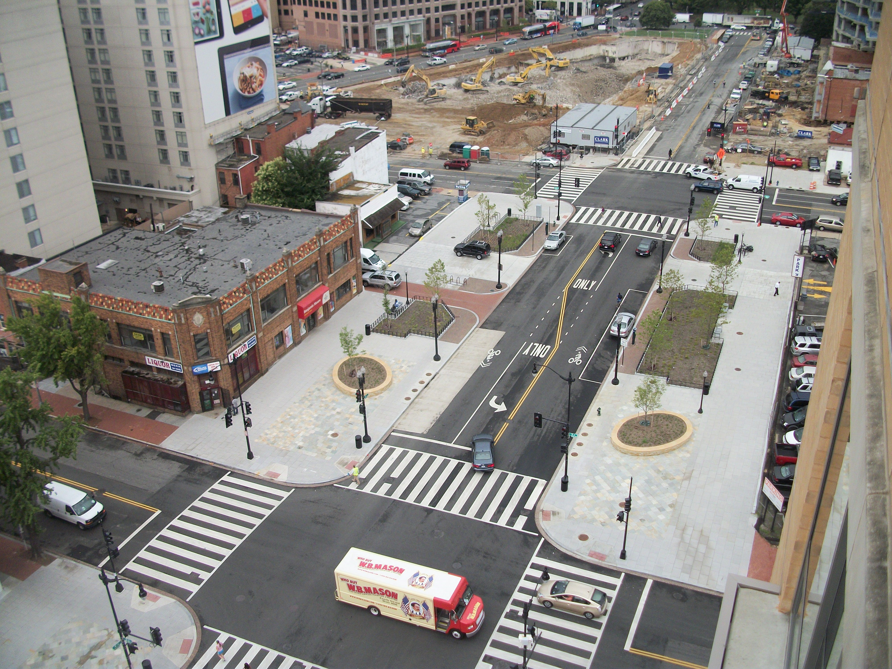
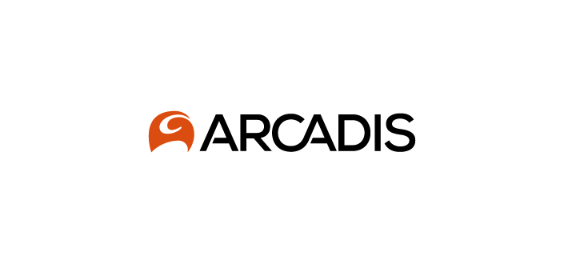
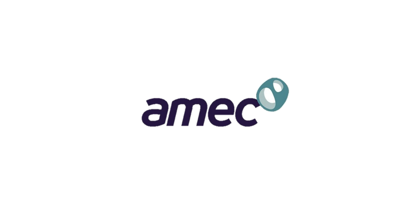
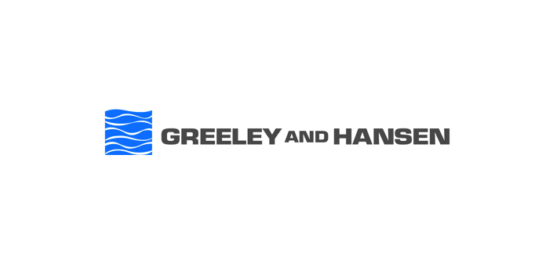
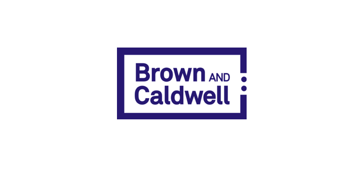

Founded in 1995, J-Dos Internationalé has a proven track record of providing excellent strategic project management services at the Federal, State and Local levels.
Our Services
Comprehensive engineering and management support services, providing clients with the highest level of quality service for each project, on time and within budget.
Construction Management
Facilities Maintenance & Management
Program & Project Management
Engineering Admin Support Services
Corporate Services
Featured Projects
Each project has a unique story, and with innovative project management, leadership, and quality of service, we are able to complete and deliver projects that illuminate the area.
Alley Palooza Project

Project Summary
The FY 2014-16 local alleyway restoration project consisted of pavement restoration citywide. The project commenced in 2014 as alleyway restoration citywide FY 2015 became part of the Mayor’s Alley Palooza program. Work under this contract included inspection and conditional assessment of the existing alleyways, PCC and asphalt pavements, adjustment of sewer-water manhole frames and basin tops, construction of wheelchair/bicycle ramps, and grading and excavating as required.
The FY 2014-16 local alleyway restoration project consisted of pavement restoration citywide. The project commenced in 2014 as alleyway restoration citywide FY 2015 became part of the Mayor’s Alley Palooza program. Work under this contract included inspection and conditional assessment of the existing alleyways, PCC and asphalt pavements, adjustment of sewer-water manhole frames and basin tops, construction of wheelchair/bicycle ramps, and grading and excavating as required.
Mount Vernon Triangle Resurfacing Project

Project Summary
The revitalization of Mount Vernon Triangle K Street Project was a designed streetscape initiative intended to improve the aesthetics and functionality of the bustling and expanding K Street corridor. The multi-phase construction project entailed utility replacement work; upgrading of streetlights and traffic signals; and repairing and resurfacing of sidewalks and roadways. The project area covered the half mile northwest of the Capitol and extended from 7th Street to New Jersey Avenue.
The work included:
- Upgrading of Street lighting – installation of new streetlight system.
- Furnish and install granite curb, brick gutters,pedestrian cross walk safety improvements, wheelchair ramps.
- Milling and Resurfacing of existing pavement section and PCC base repair upon completion of all streetscape and utility work.
- Providing conduits and manholes for the new traffic signals.
- Landscaping upgrades: Planting new trees with root zone treatment and tree boxes.
- Installation of new Traffic Signals at the intersection of 4th Street and I Street
- Drainage Upgrades – new storm drain pipes, catch basins & connecting pipes, new inlet basins, and fire hydrant upgrades.
- Installation of 8″ and 12″ water main and connections
Customers & Partners



